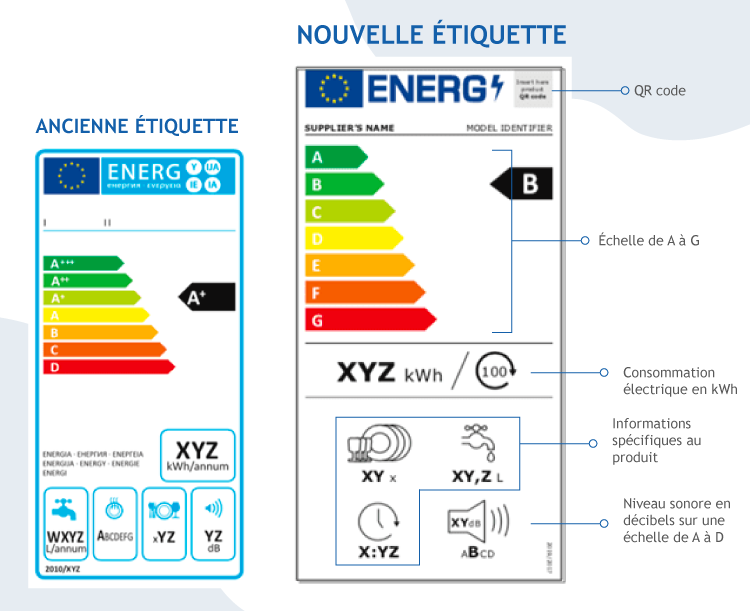
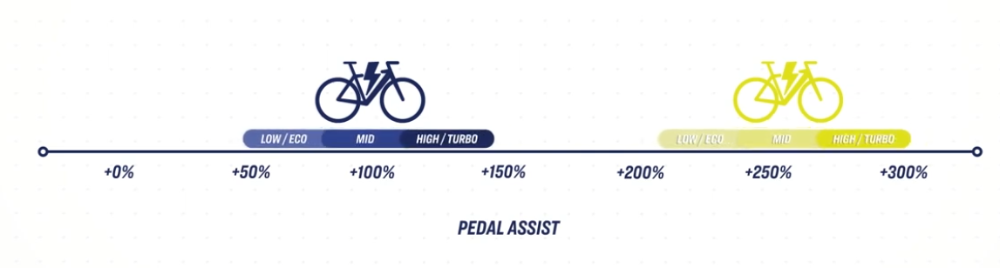
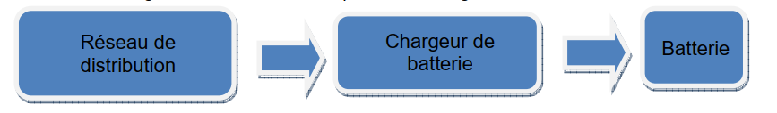
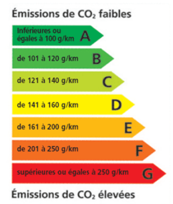
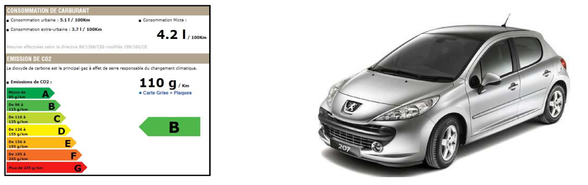
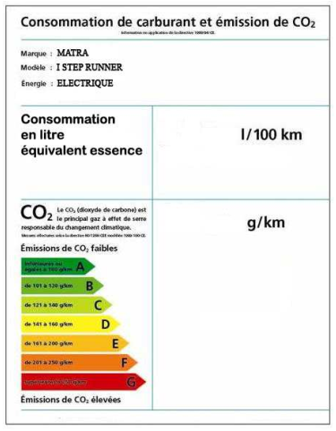
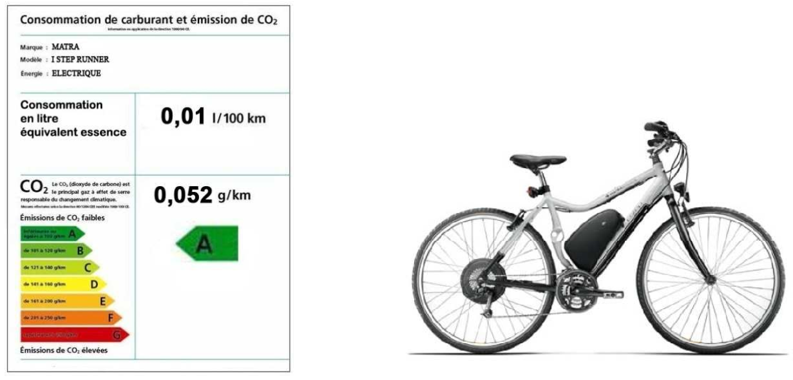
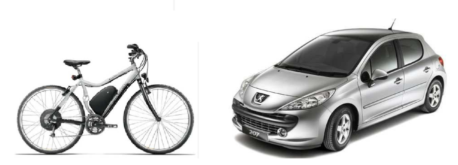

Réaliser l'étiquette énergétique du vélo à assistance électrique. Pour la caractériser, deux paramètres sont à définir :

Télécharger les documents nécessaires :

Valeurs mesurées sur 1,6 km (données) :
| Énergie consommée (Wh) | Énergie récupérée (Wh) | Énergie nette (Wh) | |
|---|---|---|---|
| Mesures 1,6 km | 2,6 | 1,2 | 1,4 |
| Énergie consommée (Wh) | Énergie récupérée (Wh) | Énergie nette (Wh) | |
|---|---|---|---|
| Trajet 8 km |
Facteur = 8 / 1,6 = 5
Consommée = 2,6 × 5 = 13 Wh
Récupérée = 1,2 × 5 = 6 Wh
Nette = 1,4 × 5 = 7 Wh (= 13 − 6)

Calculer l'énergie que doit fournir le réseau :
Eréseau = 7 / 0,9 = 7,78 Wh (≈ 8 Wh arrondi)
La batterie a été chargée la veille du TP à 19h00. Consulter les émissions de CO₂ par kWh sur le site RTE :
| Total (MW) | Nucléaire | Hydraulique | Éolien | Gaz | Charbon | Fioul | Solaire | Bioéner. |
|---|---|---|---|---|---|---|---|---|
Q2.2. Taux d'émission de gaz à effet de serre :
Q2.3. Calculer les émissions du VAE pour le trajet 8 km :

Taux typique (19h, France) : 50–100 g CO₂/kWh.
Émissions 8 km = 7,78 Wh × (taux / 1 000) ≈ 0,4–0,8 g CO₂.
Par km ≈ 0,05–0,1 g CO₂/km (très faible vs voiture thermique ~150–200 g/km).
Calculer l'énergie réseau pour 100 km :
Calculer la consommation en L équivalent essence / 100 km :
E100km = 7,78 × 12,5 = 97,25 Wh
L/100 km = 97,25 / 9 630 ≈ 0,01 L/100 km (très faible !)



| Trajet (km) | Jours/semaine | Semaines/an | Distance totale (km/an) |
|---|---|---|---|
| 7 | 5 | 45 |
7 × 5 × 45 = 1 575 km/an
| Véhicule | g CO₂/km | Distance/an (km) | Émissions/an (kg CO₂) |
|---|---|---|---|
| VAE | |||
| Peugeot 207 diesel | |||
| Économie annuelle (kg CO₂) | |||
VAE : ~0,1 × 1 575 / 1 000 ≈ 0,16 kg CO₂/an
207 diesel : ~120 × 1 575 / 1 000 ≈ 189 kg CO₂/an
Économie ≈ 189 kg CO₂/an
| Véhicule | L/100 km | Distance/an (km) | Conso/an (L) |
|---|---|---|---|
| VAE (éq. essence) | |||
| Peugeot 207 diesel | |||
| Économie annuelle (L) | |||
VAE : ~0,01 × 1 575 / 100 ≈ 0,16 L/an
207 diesel : ~4,5 × 1 575 / 100 ≈ 70,9 L/an
Économie ≈ 70,7 L/an
Prix relevés :
| Énergie | Prix relevé | Unité | Source |
|---|---|---|---|
| Gasoil | €/L | ||
| Électricité (tarif bleu) | €/kWh |
Coût annuel :
| Véhicule | Consommation/an | Prix unitaire | Coût/an (€) |
|---|---|---|---|
| VAE | |||
| Peugeot 207 diesel | |||
| Économie annuelle (€) | |||
4.1. 7 × 5 × 45 = 1 575 km/an
4.2. VAE ≈ 0,16 kg CO₂/an · 207 diesel ≈ 189 kg CO₂/an · Économie ≈ 189 kg CO₂/an
4.3. VAE ≈ 0,16 L/an · 207 diesel ≈ 70,9 L/an · Économie ≈ 70,7 L/an
4.4. (valeurs indicatives à ajuster)
Gasoil ~1,75 €/L → voiture :
70,9 × 1,75 ≈ 124 €/an
Électricité ~0,25 €/kWh → VAE :
~1 €/an
Économie ≈ ~123 €/an

🌿 Avantages environnementaux
💶 Avantages économiques